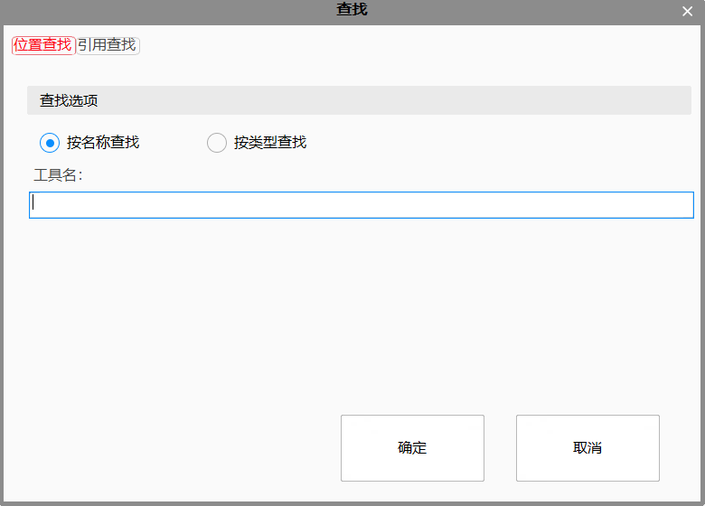
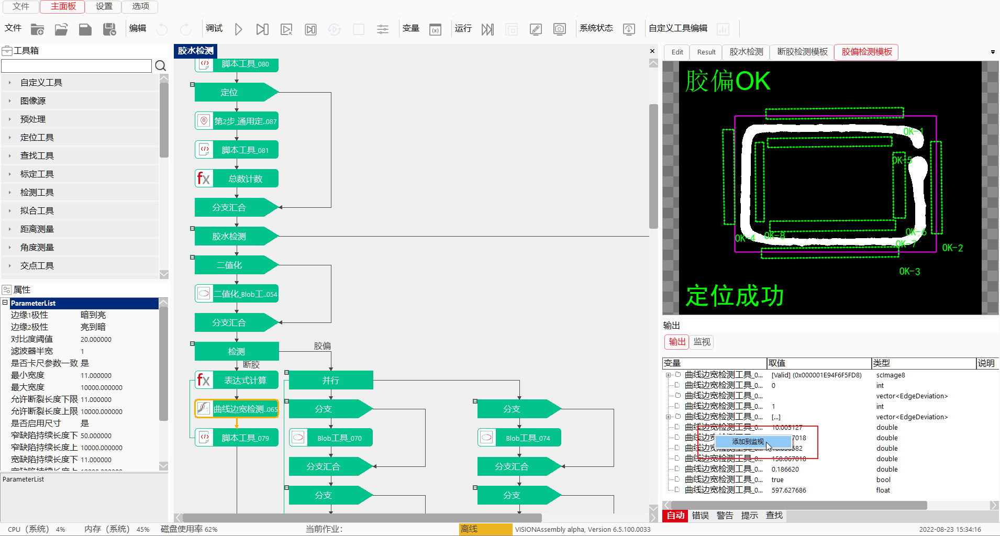
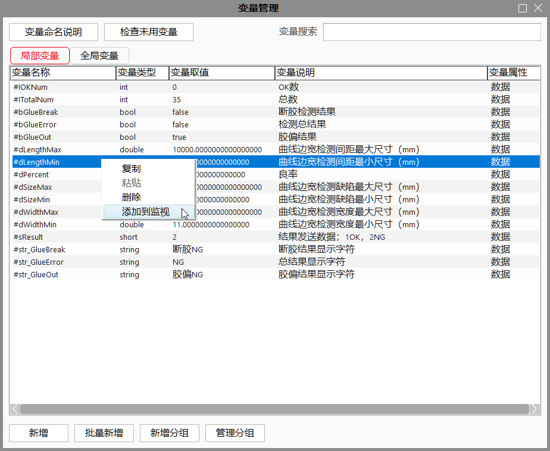
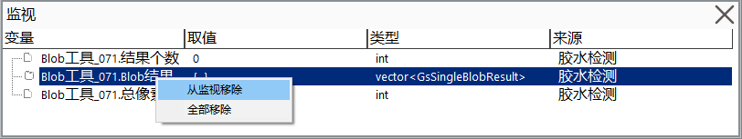
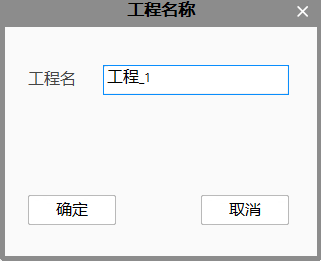
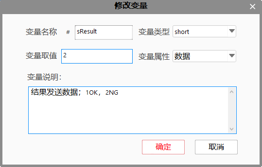
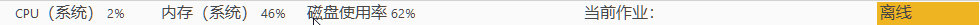

Gồm có khu vực hiển thị chế độ xem, cửa sổ đầu ra, thanh trạng thái và cửa sổ giám sát.
Edit: Khu vực hiển thị hình ảnh đầu vào của công cụ, đồng thời hiển thị giao diện GUI của công cụ, có thể chỉnh sửa thủ công các tham số GUI;
Result: Khu vực hiển thị hình ảnh kết quả của công cụ, đồng thời hiển thị GUI kết quả của công cụ;
Cloud: Khu vực hiển thị hình ảnh của công cụ điểm mây, đồng thời hiển thị GUI của công cụ. Khi công cụ điểm mây có cả đầu vào và đầu ra, chỉ hiển thị đầu ra. Có thể điều chỉnh góc nhìn điểm mây và thay đổi kích thước điểm, độ rộng đường;
View: Chế độ xem tùy chỉnh. Kéo công cụ vào cửa sổ View sẽ hiện danh sách tùy chọn cho phép hiển thị một phần thông tin (ảnh đầu ra, kết quả thực thi, v.v.) của công cụ đó. Nhấp đúp vào vùng trống trong chế độ xem để mở hộp thoại “Chỉnh sửa chế độ xem”, tại đây có thể chỉnh sửa kiểu đường, độ rộng đường, phông chữ, cỡ chữ, màu sắc, nhãn,... Cũng có thể bật chức năng “màu tự động của điều khiển” để phần mềm tự động thiết lập màu sắc điều khiển cho dự án hiện tại hoặc toàn bộ giải pháp.
Lưu ý
- Với kiểu điểm kiểm tra, không hỗ trợ chức năng màu điều khiển tự động.
- Các công cụ liên quan: công cụ tìm hình tròn, tìm đường thẳng, tìm đường thẳng nâng cao, tìm đường cong bất kỳ, tìm hình elip, công cụ tìm nhiều vòng và nhiều đường, công cụ định vị nhiều vòng và nhiều đường, công cụ hiệu chỉnh tự động và công cụ tính hiệu chỉnh liên kết bia mã DM,...
CloudView: Chế độ xem điểm mây tùy chỉnh. Kéo công cụ điểm mây vào cửa sổ CloudView để bật danh sách chọn hiển thị một phần thông tin của công cụ (ảnh đầu ra, kết quả thực thi, v.v.) trong chế độ CloudView. Nhấp chuột phải vào vùng trống để mở hộp thoại “Chỉnh sửa chế độ xem”, có thể điều chỉnh cỡ chữ, màu sắc, nhãn,... Đồng thời hỗ trợ chức năng “màu điều khiển tự động”.
Lưu ý
- Đối với công cụ ghép nhiều mục tiêu điểm mây, không hỗ trợ thanh màu.
Giám sát: Hiển thị thông tin kết quả đầu ra khi thực thi công cụ, bao gồm trạng thái và thời gian thực thi;
Lỗi: Khi chạy dự án, nếu có lỗi sẽ hiển thị trong mục này và dừng toàn bộ dự án;
Cảnh báo: Hiển thị các vấn đề không hợp lý nhưng không ảnh hưởng đến việc chạy dự án;
Thông báo: Hiển thị thông báo về trạng thái của các thao tác phổ biến trong phần mềm (như lưu dự án), không yêu cầu người dùng xử lý;
Tìm kiếm: Hỗ trợ tìm kiếm vị trí và tìm kiếm tham chiếu, tức là có thể tìm vị trí của công cụ, hình khối điều khiển, nhãn nhánh,... trong lưu đồ; cũng hỗ trợ tìm tham chiếu công cụ, tham số công cụ hoặc biến. Nhấp chuột phải, chọn Tìm kiếm hoặc nhấn phím tắt Ctrl+F để mở.
Xem chi tiết phần “Tìm kiếm” trong mục “Lưu đồ”.

Có thể thêm biến và tham số đầu ra của công cụ vào cửa sổ giám sát. Sẽ hiển thị tên đầu ra hoặc tên biến, giá trị, kiểu dữ liệu và nguồn gốc. Nếu là biến toàn cục sẽ ghi chú “toàn cục”.
Hiển thị/ẩn cửa sổ giám sát: Chuyển sang tab “Tùy chọn”, đánh dấu hoặc bỏ đánh dấu mục giám sát để bật/tắt cửa sổ giám sát;
Thêm tham số đầu ra vào giám sát: Cửa sổ giám sát cũ đổi tên thành “Tự động”, nhấp chuột phải để chọn “Thêm vào giám sát” như hình bên dưới:

Thêm biến vào giám sát: Nhấp chuột phải và chọn “Thêm vào giám sát”, như hình dưới:

Gỡ khỏi giám sát:

Làm mới cửa sổ giám sát:


Hiển thị các nội dung bao gồm: mức sử dụng CPU, bộ nhớ, đĩa, công việc hiện tại, trạng thái hệ thống, phiên bản phần mềm, thời gian hiện tại,...
Trong đó, mức sử dụng CPU, bộ nhớ và đĩa được hiển thị theo thời gian thực.
Nhấp vào mục CPU hoặc bộ nhớ có thể chuyển đổi giữa chế độ hiển thị mức sử dụng của tiến trình VA và tổng quan hệ thống. Nhấp vào đĩa có thể chuyển giữa hiển thị tổng mức sử dụng đĩa và từng ổ đĩa riêng lẻ.
